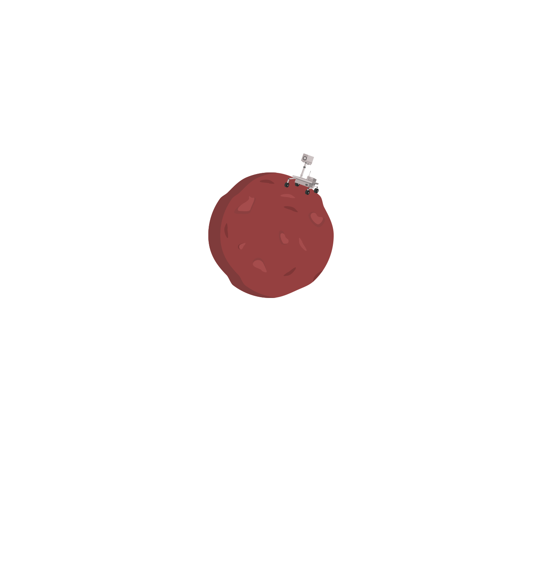
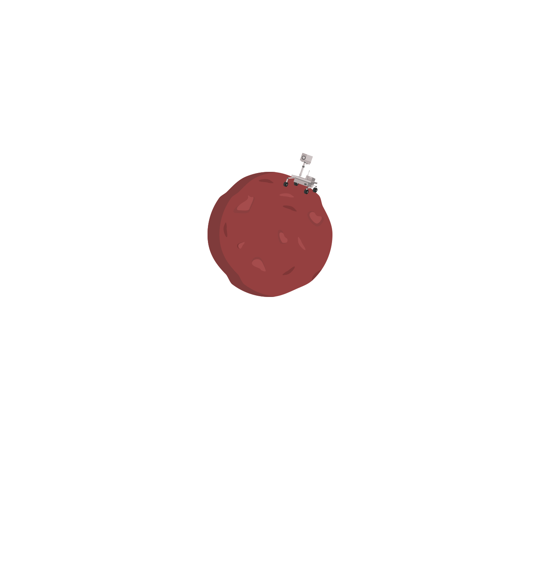

what is a
ROVER?
We use rovers to explore the planet Mars, since humans can't go there (yet). Mars Rovers help us learn about the planet by driving across its surface, taking photographs and rock samples along the way.
We use rovers to explore the planet Mars, since humans can't go there (yet). Mars Rovers help us learn about the planet by driving across its surface, taking photographs and rock samples along the way.
